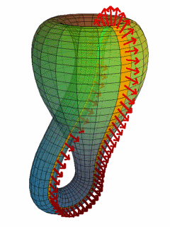

Els objectes del títol tenen en comú que es poden definir amb fórmules matemàtiques que poden ser recursives i es poden representar amb números complexos (en el cas dels fractals) o números trigonomètrics (en cas dels atractors i Ampolla de Klein)
Els atractors de De Jong es poden crear amb el programa "Fyre" que permet escriure els valors de les variables a, b, c, que estan a les formules de sinus i cosinus
Els fratals són formes geomètriques repetitives i tenen una dimensió fraccionaria que es repiteix infinites vegades. La dimensió dels fractals està entre 1 i 2 / 2 i 3.
L'ampolla de Klein i els atractors de De Jong tenen dimmensió 2, però sembla que té volum (3D)